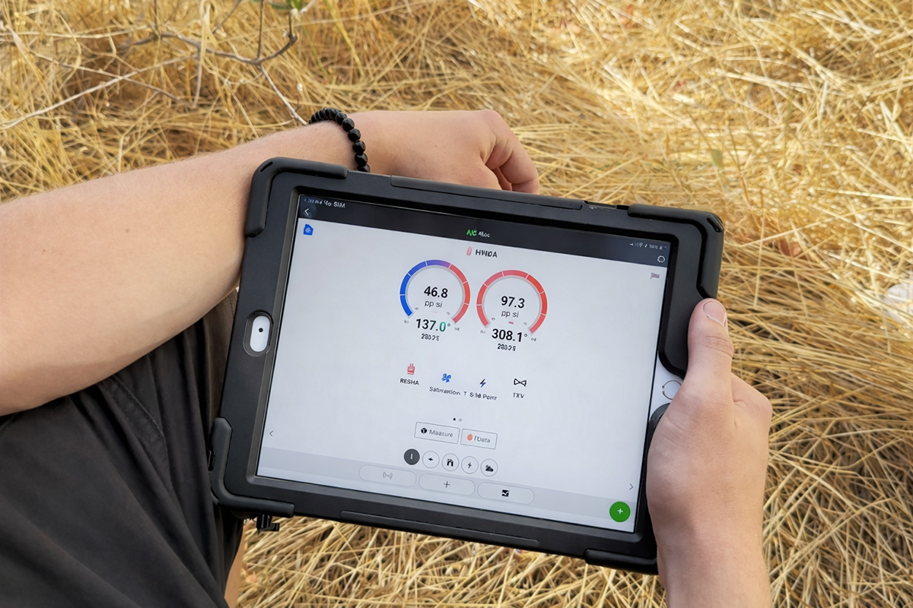

Manual D
Duct design and airflow explained
Learn how proper duct sizing keeps rooms balanced and protects equipment.

Education
Manual D - duct design, airflow, and comfort
Manual D is the standard method for designing ducts so the right amount of air reaches each room at an acceptable noise level and static pressure.

Balanced airflow starts with measurements, not guesswork.
What Manual D actually answers
- How much airflow each room needs (based on Manual J)
- What duct sizes (and fittings) deliver that airflow
- How to keep static pressure in range
- How to avoid noisy grilles and whistling
- How to balance supplies and returns
Common real-world problems Manual D prevents
- Hot/cold rooms even with new equipment
- High energy bills from restricted airflow
- Short cycling and poor humidity control
- Premature blower and compressor wear
- Noisy registers and return grilles
What you can ask a contractor for
- A room-by-room airflow target (CFM) list
- Static pressure readings before/after (ESP)
- Evidence of duct leakage reduction (sealed returns, boots, trunks)
- A plan for problem rooms (adds, returns, resizing, balancing)